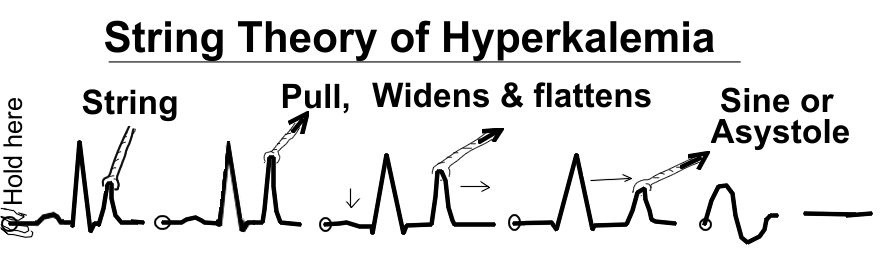

急性腎損傷：辨識、原因與治療
主講：Elise Boller, DVM, DACVECC
TSFM Annual Conference 2026｜Acute kidney injury — recognition, causes and treatment（PowerPoint 47 張，含講者備註）｜場次 10
目前只有講義，沒有課堂錄音；講義上的影片（Vimeo）與現場投票無法收錄。
⭐ 必記原則
- AKI 是動態過程：可以是腎前、腎性、腎後，ICU 病患常三者混合
- AKI 的尿量可以正常、多尿、寡尿或無尿；尿量一定要對照水合、灌流與輸液來解讀
- 寡尿定義：有打輸液時 < 1–2 mL/kg/hr（預期 > 2）；沒打輸液且水合正常時 < 1 mL/kg/hr；無尿永遠不是生理性的
- 病理性寡尿：尿液幾乎沒有濃縮（貓 USG < 1.035、狗 < 1.030）；生理性寡尿 USG 高
- 給輸液之前就先採血和尿；影像要積極排除腎後原因（貓的輸尿管阻塞）
- 治療目標：停止進一步傷害、撐過腎功能喪失的併發症、等待修復期；設定清楚的決策點並和飼主溝通
- 水合後：無尿只補無感流失（約 22 mL/kg/day）；寡尿／多尿要 ins = outs，每 4 小時量尿量
- 預後：無尿沒透析很差；寡尿保留到差（4–12 週可能恢復）；多尿較好；腎前／腎後原因矯正後好
AKI 的決策點與四個階段
▾這份是 PowerPoint 檔（檔名「Acute kidney injury - recognition, causes and treatment_Boller E」），和其他九份 PDF 不同，含講者備註。部分備註提到「here in aus」（澳洲），可能是講者沿用的舊教材。
決策點
- 初步檢查之後立刻（🗒️ 原因、嚴重度、需要的照護等級）
- 初步補水／復甦之後
- 確定尿量之後
- 發現寡尿／無尿時
- 恢復期之後
- 出現新問題時
AKI 的四個階段
| 階段 | 🗒️ 說明 |
|---|---|
| 起始期 Initiation | 腎臟受傷的當下；GFR 與 USG 的變化還看不出來 |
| 擴展期 Extension | 細胞傷害導致細胞死亡（壞死、凋亡或兩者） |
| 維持期 Maintenance | GFR 已經下降、出現尿毒併發症、有不可逆的腎損傷；尿量不定 |
| 恢復期 Recovery | 腎小管細胞修復再生，完全或部分恢復 |
1. 原因、致病機轉與名詞
▾原因交互作用：腎前、腎性、腎後
🗒️ 有些病例三種成分都有；ICU 的病患最常是多因素造成的 AKI。
致病機轉：血管、腎絲球、腎小管
- 🗒️ 血管功能異常：腎上腺素活性增加 → 入球小動脈收縮，加上 endothelin、thromboxane、PAF 等血管活性物質；同時可能有出球小動脈強烈擴張 → 腎血流與 GFR 大幅下降
- 腎絲球損傷與血管內凝血；系膜細胞收縮、足細胞腫脹、活性氧
- 腎小管傷害：缺氧、ATP 耗竭 → 細胞腫脹與死亡；死掉的上皮細胞堵在管腔 → 尿量下降
- 管腔內壓升高 → 濾液回漏到間質、過濾失敗
名詞
| 名詞 | 🗒️ 定義 |
|---|---|
| 氮血症 Azotemia | 血中含氮化合物過多（尿素、肌酸酐、磷、硫酸鹽等「尿毒素」）；可為腎前、腎性、腎後 |
| 尿毒症 Uremia | 腎功能不足造成的臨床症候群：沉鬱、噁心嘔吐、腸胃潰瘍、肺炎、癲癇、凝血異常等 |
| AKI | 逐漸取代「急性腎衰竭」：腎損傷是動態過程，不一定走到衰竭。人醫定義為腎功能突然下降，常以肌酸酐上升或尿量下降辨識 |
| CKD | 慢性腎病（對照見第 3 節） |
2. 尿量：正常、寡尿、多尿、無尿
▾兩個重點
- 🗒️ AKI 病患的尿量可以正常、寡尿、多尿，甚至無尿
- 尿量一定要對照水合、灌流與 IV 輸液來看
寡尿：生理性還是病理性？
生理性（適當的）
- 對有效循環血量下降或心輸出量下降的適當反應（保鈉保水）
- USG 高
病理性（不適當的）
- 嚴重腎病造成 GFR 大幅下降
- 尿液幾乎沒有濃縮：貓 USG < 1.035、狗 < 1.030
| 情況 | 尿量 | 判讀 |
|---|---|---|
| 有打 IV 輸液 | > 2 mL/kg/hr | 預期 |
| 有打 IV 輸液 | 1–2 mL/kg/hr | 相對寡尿 |
| 水合與灌流正常、沒打輸液 | < 1 mL/kg/hr（備註：< 0.5–1） | 絕對寡尿 |
🗒️ 部分尿路阻塞甚至破裂也會讓尿量下降。
多尿
- 沒打輸液時 > 2 mL/kg/hr；有打輸液可能到 4–6 mL/kg/hr
- 🗒️ 有些 AKI 病患尿量可高達 40 mL/kg/hr（投影片：「恢復與再生期的誇張尿量」）
- 多尿總比寡尿／無尿好，預後較好；恢復／再生期也會看到多尿
無尿
- 完全沒有尿，永遠不是生理性的
- 🗒️ 代表最嚴重的腎病或完全尿路阻塞；伴隨高血鉀、嚴重酸中毒；很難逆轉
- 常見結局：安樂死或透析
3. 臨床問題與診斷
▾要回答的臨床問題
- 腎前、腎性還是腎後？
- CKD、AKI，還是兩者（AKI on CKD）？
- 尿量多少？
- 生理性還是病理性寡／無尿？
- 原因可逆嗎？
- 飼主長期願意承擔到什麼程度？
AKI vs CKD
| AKI | CKD | |
|---|---|---|
| 病史 | 急性發作（非特異）、嘔吐、PU/PD 或寡／無尿、最近有腎傷害事件 | 體重減輕、PU/PD |
| 理學檢查 | 脫水 ± 腹痛、低體溫 | 脫水、腎臟小而不規則 ± 尿毒口臭、口腔潰瘍 |
| 生化 | 氮血症 ± 高磷 ± 高血鉀 | 氮血症、高磷、低血鉀 |
| CBC | ± 發炎性白血球像 | 非再生性貧血、小球低色素 |
| 尿液 | USG < 1.035（貓）、< 1.030（狗）；腎小管圓柱（顆粒、上皮）；± 蛋白尿、糖尿、膿尿 | 等張尿 ± 蛋白尿 |
| 血壓 | 正常、升高或降低 | 正常到升高 |
| 腹部影像 | 腎臟正常到變大 ± 腎盂擴張、腎／輸尿管結石 ± 皮髓質分界模糊 ± medullary rim sign | 腎臟小而不規則 ± 結石 |
🗒️ 理學檢查補充：心血管可能休克、心搏過速、正常或心搏過慢、低或高血壓；呼吸急促（代償代謝性酸中毒）；低體溫常見，體溫「正常」反而要想是不是「異常的正常」；腎臟疼痛／變大；一定要觸診膀胱當基準，並看是否阻塞。
診斷檢查
- 腎損傷 vs 腎功能異常：肌酸酐、尿素、SDMA、血液學、尿液（沉渣、試紙、USG、培養）、Cystatin B、影像（特別是排除腎後原因）
- 🗒️ 在大量輸液前先採血和尿：才知道治療前的狀態與腎臟濃縮能力。但不要因為採不到尿就延誤治療（可能根本無尿）
- 送：血氣／電解質、PCV/TP、完整生化、CBC、尿液分析＋培養與藥敏
影像與進階檢查
X 光
- 診斷腎後原因：腎結石、阻塞性尿結石、尿道結石
- 阻塞物不一定顯影
- 腎臟可能正常或變大
超音波
- 腎臟正常或變大；實質常正常
- 皮質回音增加或皮髓交界高回音帶（如乙二醇中毒）
- 腎周積液：中毒、發炎、貓淋巴瘤
- 腎盂擴張：腎盂腎炎、阻塞；水腎：阻塞
- 腹膜後脂肪高回音
進階：顯影檢查、腹部 CT、腎臟抽吸／切片、感染症檢驗、毒物篩檢、結石分析、胸腔 X 光。
4. 治療總覽與前 2–4 小時
▾治療的整體思路
- 傷害已經造成了
- 好好溝通，清楚設定決策點
- 陪病患撐過腎功能喪失帶來的併發症
- 等待恢復期
AKI 治療的主軸（* 為決策點）
- * 判斷原因、嚴重度與需要的照護
- 矯正灌流異常與體液缺失
- 矯正酸鹼與代謝急症（高血鉀、酸血症）
- 判斷腎前 vs 腎性 vs 腎後（或混合）
- * 確定尿量並建立尿液產生
- 停用有腎毒性的藥物
- 治療可治療的病因
- 加護支持與營養支持
- * 腎臟替代療法（血液或腹膜透析）
判斷原因、嚴重度與需要的照護
- 家裡：🗒️ 腎毒物攝入史——貓的百合、乙二醇、naproxen、葡萄／葡萄乾
- 住院紀錄：麻醉時間、低血壓事件、失血、腎毒性抗生素等暴露
- 理學檢查與初步檢查
- 腎後原因：尿腹、輸尿管破裂或阻塞（貓）
- 腎毒性來源：院內感染、抗生素、其他藥物、毒素
決策點 2
🗒️ 需要 24 小時照護，監測是關鍵。（不能提供時要考慮轉診）
5. 輸液治療：穩定並確定尿量
▾6. 矯正代謝異常
▾高血鉀
| 處置 | 劑量 | 🗒️ 機轉 |
|---|---|---|
| 葡萄糖酸鈣 | 50–100 mg/kg | 提高閾電位，保護心臟（不降鉀） |
| 葡萄糖 | 0.5 g/kg，稀釋 1 : 3 | 把鉀推進細胞 |
| 胰島素＋葡萄糖 | 胰島素 0.5–1 U/kg | 把鉀推進細胞 |
| 碳酸氫鈉 | 把鉀推進細胞 |
輸液中的鉀不用擔心（微量）。🗒️ 這些都只是暫時「把鉀藏起來」，救命但短暫；真正要排出鉀，要靠透析、解除阻塞或處理尿腹。

🗒️ 典型 ECG：心搏過慢、T 波高尖、QRS 變寬、P 波變小變寬或消失；嚴重時正弦波、心室纖維顫動或心搏停止（📄 31 附 Kittleson 教科書的治療前、中、後 ECG）。
酸血症
原因：尿毒酸、無法排 H⁺、無法再吸收 HCO₃⁻、乳酸中毒。🗒️ 矯正灌流就處理了三分之二（尿毒與乳酸），腎小管性的部分可能要時間。
| pH | NaHCO₃ |
|---|---|
| > 7.1 | 不要給 |
| 7.0–7.1 | 考慮 |
| < 6.9 | 強烈考慮 |
- 先給輸液！
- 禁忌：換氣不足、高血鈉
- 劑量 0.3 × 體重 × 鹼缺乏（鹼缺乏＝24 − 病患 HCO₃⁻）；稀釋 1 : 3；⅓ 在 15 分鐘給，下一個 ⅓ 在 2–6 小時給
其他電解質
| 電解質 | 重點 |
|---|---|
| 磷 | GFR 下降 → 通常高；可造成低血鈣。處理：輸液、磷結合劑 |
| 鈉 | 可低、正常或高；變化不要超過 0.5–1.0 mmol/L/hr |
| 鈣 | 可低、正常或高；高血鉀時只用必要的最小量 |
| 鎂 | 初期通常高；多尿期可能低；低鎂會造成難治的低血鉀 |
高血壓
- 收縮壓 > 180 mmHg 有標的器官傷害風險
- 不要降太快（建議降 25%）
- Amlodipine、nifedipine、hydralazine；避免 ACE 抑制劑；密切監測
7. 確定尿量（決策點）與持續治療
▾決策點：確定尿量
無法誘發尿量代表腎實質嚴重受損，沒有透析就很難治療 → 轉診、持續照護或安樂死。
寡／無尿與多尿的處置
| 藥物 | 🗒️ 劑量與重點 |
|---|---|
| Furosemide* | 血量正常時 1–6 mg/kg IV bolus；30 分鐘內沒有明顯尿量可重複或加量。有利尿就改 CRI 0.1–1 mg/kg/hr（有時更高）或每 6–8 小時重複 |
| Mannitol* | 只在血量正常後使用。0.5 g/kg IV 20–30 分鐘，密切注意呼吸窘迫；有尿就 CRI 60–120 mg/kg/hr 或每 4–6 小時重複。沒有尿就不要再給（不會被過濾到腎小管，只會造成容積過載、肺水腫） |
| Diltiazem | 擴張入球小動脈、利鈉、減少細胞內鈣毒性；0.1–0.5 mg/kg IV 慢推，之後 1–5 µg/kg/min CRI |
| 多尿 | 輸液跟上流失 |
🗒️ 一旦開始利尿，要非常注意維持血量正常，避免脫水進一步減少腎血流。
「維持量」每隻都不一樣
- 無感流失＋有感流失——尿量是最大的變數；安全上限；導尿管、中心靜脈導管；基準資料與監測體液平衡（體重、進出量）不可少
- 無尿病患：只補無感流失＝22 mL/kg/day（自由水＝5% 葡萄糖水）
- 寡尿與多尿：「ins = outs」——無感流失＋有感流失（平衡等張晶體液）；每 4 小時量尿量、估算其他流失
決策點：腎臟替代療法
- 選項：安樂死、腎臟替代療法（腹膜透析、間歇性血液透析、連續性腎臟替代療法）
- 再生需要 4–12 週
- 🗒️ 透析的目的是在等待腎臟修復再生期間持續清除尿毒素；要告訴飼主可能需要數週才知道腎臟會不會恢復，費用高、照護密集
處理特定病因：腎後
尿道阻塞、雙側輸尿管阻塞、唯一有功能的腎臟阻塞、尿腹——要和其他治療同時處理。
8. 加護與營養支持、監測表、預後
▾加護與營養支持
| 項目 | 🗒️ 說明 |
|---|---|
| 止吐 | 嚴重 AKI 一律給，即使沒看到吐；ondansetron、maropitant |
| 胃腸保護 | 尿毒造成潰瘍出血的風險；多數人選 PPI |
| 營養 | 非常重要，可能需要放餵食管 |
| 口腔照護 | |
| 磷結合劑 | 如氫氧化鋁，和腸道營養一起給 |
| 降血壓藥 | 如鈣離子通道阻斷劑 |
| 止痛 | 不要用 NSAID！ |
住院監測醫囑
| 醫囑 | 頻率 | 出現以下情況要通知 |
|---|---|---|
| 心跳 | q2–4h | 貓 < 150 或 > 200（狗 < 60、> 150） |
| ECG 節律 | q2–4h | 心律不整 |
| 血壓 | q2–4h | 基準 > 180 時下降不超過 25%；否則 MAP < 65 或 > 100 mmHg |
| 呼吸速率、用力、聽診 | q2–4h | > 48、用力增加、爆裂音、結膜水腫、鼻分泌物 |
| 中心靜脈壓 | q2–4h | > 6–8 cmH₂O |
| 尿量 | q2–4h | < 2 或 > 6 mL/kg/hr |
| 計算進出量 | q2–4h | 差距 > 10–20% |
| 體重 | q6–8h | 補水／灌流矯正後增加 > 5%；多尿期減少 > 5% |
| 電解質、酸鹼、血糖、PCV/TS | q6–8h | 早期注意高鉀、低鈉；晚期注意低鉀、高鈉 |
| 止痛 | PRN | 鴉片類最安全（注意腸胃） |
| 營養 | q6–8h | 鼻食道管，早點放 |
| 血檢 | q24h | BUN、creatinine、白蛋白、血液學 |
| 其他 | 抗生素、降血壓、腸胃支持等 |
預後
| 類型 | 預後 |
|---|---|
| 整體 | 取決於病因與嚴重度 |
| 腎性 AKI：無尿 | 沒有血液透析極差 |
| 腎性 AKI：寡尿 | 保留到差；可能在 4–12 週恢復功能 |
| 腎性 AKI：多尿 | 較好 |
| 腎前與腎後 | 找出並矯正原因就好 |
🗒️ 整體死亡率約 60%；存活者約 60% 變成 CKD、只有約 40% 恢復正常——貓的數字更低一些。狗的鉤端螺旋體病存活率約 85%。
結論
- AKI 是動態過程，可以是腎前、腎性、腎後
- 尿量必須對照水合、灌流與輸液來看
- AKI 可以多尿、寡尿或無尿
- 治療目標是停止進一步傷害，並在腎臟修復再生期間支持病患
- 明確的決策點與飼主溝通是 AKI 處置的關鍵
- 間歇性血液透析與連續性腎臟替代療法有效，但不是保證
- 不到最後不會知道……擁抱不確定！